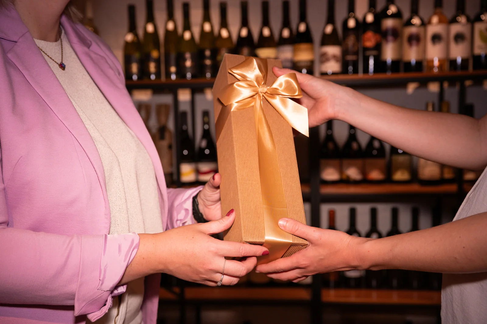

Taste by S(ara)
De S staat voor Sara.
Wijn is zo veelzijdig dat je al snel door de bomen het bos niet meer ziet. Wat drink je zelf graag? En welke fles geef je aan iemand anders?
Daarom zoek ik wijnen die je niet in elke winkel vindt. Soms exclusief, soms gewoon heel lekker. En ik neem je graag mee in dat grote wijnlandschap.
Kom je bij mij langs in de winkel, dan help ik je een keuze maken welke wijn jou zal liggen.Sara
Wat je bij Sara vindt
Van één fles tot een wijnreis
Voor jezelf, voor een cadeau of voor een avond met vrienden. Alles met dezelfde zorg gekozen.

Minder gekende parels
Wijnen en bubbels met een eigen karakter. Kies ze samen met Sara in de winkel, of bestel ze online.
Naar de webshop
Mooi ingepakt
Een verrassend wijnpakket om te krijgen of te schenken.
Vraag het aan Sara
Proeven en bijleren
Een avond met je groep, bij jou thuis of bij ons in Harelbeke.
Hoe het werktOp reis naar de wijn
Tips over een streek die je zelf wil ontdekken, of een reis die al klaarligt, met of zonder begeleiding.
Meer over de reizen
Workshops en tastings
Een avond proeven
Een proeverij, een masterclass of een lessenreeks rond een thema dat je zelf kiest. Leuk en leerrijk, en volledig op maat van je groep.
- Formule
- Proeverij, masterclass of lessenreeks
- Groep
- 6 tot 15 personen
- Waar
- Bij jou thuis of in Harelbeke
- Thema
- Kies je zelf

Wijnreizen
Verder dan de bekende regio's
Plan je zelf een bezoek aan een wijnstreek? Sara geeft je tips over specifieke regio's, of stelt een kant-en-klare of begeleide reis voor.
Vraag Sara om tipsLangskomen
Kom even binnen
De winkel is open op vrijdagnamiddag en zaterdagvoormiddag. Past dat niet, of zoek je iets op maat? Bel of mail Sara even.
Openingsuren
Winkel in Harelbeke
- Vrijdag
- 14.00 tot 18.00
- Zaterdag
- 9.30 tot 12.30
- Andere dagen
- gesloten
uit 21 reviews